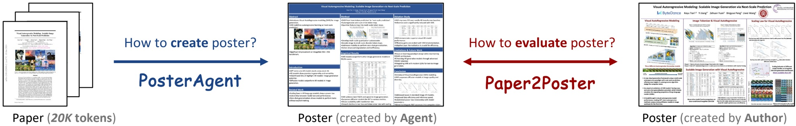
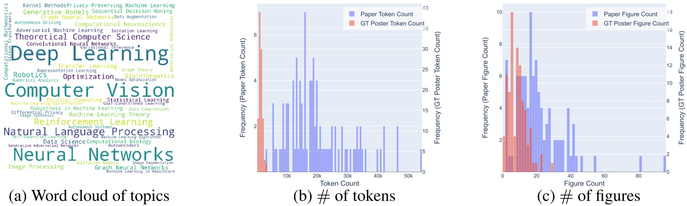
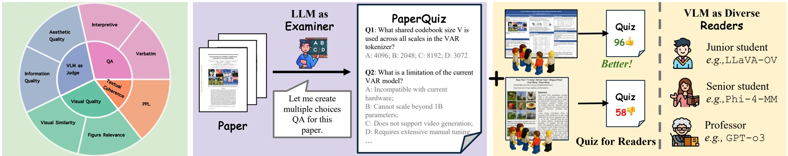

标题： PosterAgent: A Multi-Agent Framework for Generating High-Quality Posters from Academic Papers
代码地址： https://github.com/Paper2Poster/Paper2Poster
导读

图1展示了PosterAgent框架的概述，该框架旨在解决从学术论文生成高质量海报的挑战。
PosterAgent框架通过全球重构文档内容和局部细化步骤，利用视觉反馈生成简洁且连贯的海报。
研究动机
现有的海报生成系统在长文档上下文中存在挑战，如长文本、多模式输入和布局约束。PosterAgent旨在解决这些问题，提供一个基准和评价指标套件，支持系统之间的全面比较。
创新点
1. 引入了一个新的基准——Paper2Poster，用于评估海报生成系统的性能。
2. 提出了一种新的设计哲学——“自上而下”的视觉反馈循环，确保生成的海报具有良好的视觉质量和文本连贯性。
3. 开发了PosterAgent变体，这些变体在多项指标上表现出色，特别是在视觉质量和文本连贯性方面。
方法
PosterAgent框架包括三个关键组件：解析器、规划者和画家-评论者。解析器提取文本和视觉内容，规划者构建布局，画家-评论者循环细化每个面板。
1. 解析器：解析器通过工具和LLM基础模型提取关键文本和视觉内容，构建资产库。
2. 规划者：规划者将资产库中的文本-视觉配对分配到布局中，生成二叉树布局，分配面板并考虑内容长度。
3. 画家-评论者循环：画家负责生成草稿面板，评论者则通过视觉反馈纠正文本溢出和空间对齐问题。

图2展示了PosterAgent框架的详细流程，包括解析器、规划者和画家-评论者循环。
实验结果
实验结果表明，PosterAgent变体在多项指标上表现出色，特别是在视觉质量和文本连贯性方面。我们的开放源代码堆栈（Qwen-Qwen）实现了最高的整体鲁棒性得分，达到114.65，紧随其后的封闭源代码变体。

表1显示了不同变体在各项指标上的性能对比。
总结
PosterAgent框架提供了一个有效的方法，用于从学术论文生成高质量海报。它通过全球重构和局部细化步骤，结合视觉反馈，生成简洁且连贯的海报，解决了传统方法在视觉质量和文本连贯性方面的不足。